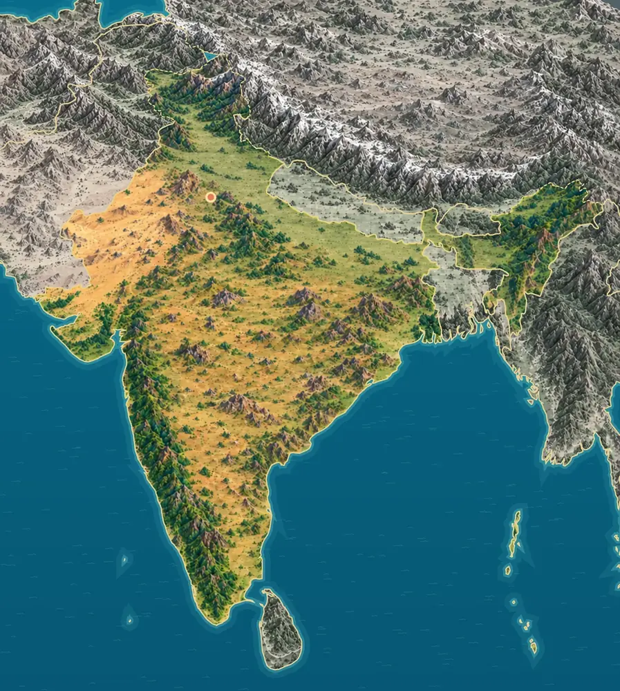

높은 산과 넓은 평야
북쪽에는 히말라야가 이어지고, 그 남쪽에는 갠지스강 같은 큰 강이 흙을 쌓아 만든 넓은 평야가 펼쳐져요. 북서쪽에는 건조한 타르사막이 있고, 수도 뉴델리는 북부 평야에 있어요.

인도는 북쪽에 세계에서 가장 높은 히말라야산맥이 있어요. 가운데에는 넓은 평야가, 남쪽에는 바다로 뻗은 커다란 반도가 있어요.
인도는 북쪽의 히말라야, 강이 만든 북부 평야, 북서쪽의 타르사막, 반도 안쪽의 데칸고원으로 나뉘어요. 반도의 양쪽은 아라비아해와 벵골만이에요.
북쪽에는 히말라야가 이어지고, 그 남쪽에는 갠지스강 같은 큰 강이 흙을 쌓아 만든 넓은 평야가 펼쳐져요. 북서쪽에는 건조한 타르사막이 있고, 수도 뉴델리는 북부 평야에 있어요.
반도 안쪽에는 데칸고원이 넓게 자리해요. 서쪽 해안을 따라 서고츠산맥이 솟아 그 아래 해안 평야는 좁고, 동쪽에는 낮은 동고츠산맥과 더 넓은 해안 평야가 있어요.
인도 서쪽에는 아라비아해, 동쪽에는 벵골만이 있어요. 남서부 케랄라 해안에는 바닷물과 강물이 만나는 물길과 호수가 그물처럼 이어진 ‘백워터’가 있어요.
출처: National Portal of India, Physical features · Kerala Tourism, Backwaters
아라비아해에는 산호섬인 락샤드위프 제도가, 벵골만에는 안다만·니코바르 제도가 있어요.
인도판이 북쪽의 유라시아판을 밀어붙이면서 히말라야가 높아졌어요. 이 움직임은 지금도 이어져 히말라야 주변에서는 지진이 자주 일어나요.
출처: USGS, Seismicity of the Earth 1900-2010: Himalaya and vicinity
데칸고원 북서부의 ‘데칸 트랩’은 약 6,500만 년 전 엄청난 양의 용암이 흘러나와 쌓인 땅이에요. 지금도 약 50만 km²를 덮고 있고, 용암층이 계단처럼 겹겹이 쌓여 있어요.
인도에서 잘 알려진 도시, 역사유산, 자연, 식물, 문화, 음식, 동물, 인사말, 국기를 한 장씩 그렸어요.
뉴델리는 인도의 수도예요. 넓은 길 끝에 커다란 돌문인 인디아 게이트가 서 있어요. 길에서는 바퀴가 세 개인 작은 택시도 볼 수 있어요.
뉴델리는 인도의 수도로, 넓게 계획한 거리와 정원, 공공건물이 어우러진 도시예요. 주변의 델리 지역에는 여러 시대의 유적과 오래된 생활 공간도 함께 남아 있어요. 인디아 게이트는 제1차 세계대전 등에서 숨진 인도 군인들을 기리는 사암 기념문이에요. 에드윈 루티언스가 설계했으며 1931년에 완성되었어요. 길가의 나무와 작은 오토릭샤는 오늘날 도시의 분위기를 더해요.
하와 마할은 '바람의 궁전'이라는 뜻이에요. 분홍빛 벽에 작은 창문이 900개 넘게 촘촘히 나 있어요. 창으로 시원한 바람이 솔솔 들어와요.
하와 마할은 자이푸르에 있는 궁전으로, 이름은 바람의 궁전을 뜻해요. 1799년 사와이 프라탑 싱이 세웠으며, 다섯 층의 전면에 작은 돌출창인 자로카와 격자창을 촘촘히 배치했어요. 이 창들은 바람이 통하게 하고, 왕실 여성들이 바깥에서 보이지 않으면서 거리의 모습을 살펴볼 수 있게 했어요. 분홍빛 사암과 흰 테두리, 작은 지붕이 반복되는 입면이 독특해요. 겉모습이 얇고 장식적인 벽처럼 보여도 내부에는 여러 층의 공간과 이동 통로가 있어요.
케랄라 백워터는 바닷가를 따라 호수와 강이 거미줄처럼 이어진 물길이에요. 물가에는 야자수와 논, 마을이 있어요. 지붕 달린 배를 타고 천천히 둘러볼 수 있어요.
케랄라 백워터는 인도 남서부 해안을 따라 이어지는 호수와 석호, 강, 운하의 물길이에요. 바닷가와 가까운 이 수계 주변에는 야자수와 논, 마을이 함께 자리해요. 케투발람이라고 부르는 전통 배는 둥근 지붕과 길게 이어진 나무 선체가 특징이며, 하우스보트로도 이용돼요. 물길은 사람들의 이동과 생활을 연결하고, 물가의 식물과 새, 물고기에게도 서식 공간을 제공해요.
연꽃은 진흙 속에서 자라 물 위로 예쁜 꽃을 피워요. 커다란 둥근 잎은 물방울을 또르르 굴려 내요. 인도에서는 그림과 장식에 연꽃을 많이 그려요.
연꽃의 학명은 Nelumbo nucifera예요. 진흙 속의 뿌리줄기에서 잎자루와 꽃줄기가 자라 물 위로 올라와요. 큰 둥근 잎에는 가운데에서 바깥쪽으로 퍼지는 잎맥이 있고, 표면은 물을 잘 튕겨 내요. 여러 장의 꽃잎 안쪽에는 노란 수술과 씨가 자라는 꽃턱이 보여요. 연꽃은 인도의 종교와 예술에서도 오랫동안 중요한 상징으로 쓰였어요.
사리는 긴 천 한 장을 몸에 둘러 입는 옷이에요. 천 길이가 5m가 넘기도 해요. 천을 두르는 방법이 지역마다 달라요.
사리는 긴 천을 몸에 둘러 입는 의상으로, 인도와 주변 지역에서 여러 방식으로 입어요. 천의 재료와 짜임, 색과 두르는 방식은 지역과 행사에 따라 달라져요. 흔히 허리에 천을 감고 앞쪽에 주름을 잡은 뒤, 끝부분인 팔루를 어깨로 넘겨 입어요. 사리 안에는 몸에 맞는 블라우스와 속치마를 함께 입는 경우가 많아요. 비단에 금빛 실로 가장자리를 짠 무늬는 천의 결을 더 풍성하게 보여줘요.
커리는 여러 가지 향신료를 넣어 만든 걸쭉한 요리예요. 난은 화덕에 구운 납작한 빵이에요. 난을 찢어 커리에 찍어 먹어요.
인도에는 지역과 집집마다 재료와 향신료가 다른 다양한 음식이 있어요. 커리라고 묶어 부르는 요리에도 채소와 콩, 고기, 치즈 등을 쓰는 여러 종류가 있어요. 파니르라는 치즈와 채소를 넣은 소스 요리도 그중 하나예요. 난은 밀가루 반죽으로 만드는 납작한 빵으로, 탄두르 화덕에서 구운 표면의 부푼 자국과 노릇한 부분이 특징이에요. 커리와 난은 북인도식 식사에서 볼 수 있는 조합 가운데 하나예요.
벵골호랑이는 인도와 이웃 나라에 사는 호랑이예요. 주황색 털에 검은 줄무늬가 있어 숲에서 잘 숨어요. 물에서 헤엄치는 것도 좋아해요.
벵골호랑이는 인도와 주변 남아시아 지역에 사는 호랑이예요. 숲과 초원, 맹그로브 습지 등 여러 환경을 이용하며, 주황빛 털과 검은 줄무늬가 주변 식생 속에서 몸을 숨기는 데 도움을 줘요. 주로 혼자 넓은 영역을 이용하고 사슴 같은 먹잇감을 사냥해요. 물속을 헤엄치거나 더위를 식히는 모습도 볼 수 있어요. 먹이 동물과 숲, 이동할 수 있는 연결된 서식지를 함께 지키는 일이 중요해요.
나마스테는 인도에서 쓰는 인사말이에요. 두 손바닥을 가슴 앞에 모으고 고개를 살짝 숙여요. 만날 때도 헤어질 때도 쓸 수 있어요.
나마스테(नमस्ते)는 상대에게 경의를 전하는 인사말이에요. 두 손바닥을 가슴 앞에 모으고 고개를 조금 숙이는 동작과 함께 쓰기도 해요. 인도에는 다양한 언어와 인사 방식이 있어 상황과 지역에 따라 표현이 달라져요. 나마스테는 힌디어와 산스크리트어 등에 쓰는 데바나가리 문자로 적어요. 글자 위를 가로선이 잇고, 자음과 모음을 합쳐 한 글자로 적는 것이 특징이에요.

인도 국기는 주황, 하양, 초록 세 줄로 되어 있어요. 가운데에는 바퀴살이 24개인 파란 바퀴가 있어요. 이 바퀴는 멈추지 않고 나아가는 것을 뜻해요.
인도 국기는 위에서부터 주황(사프란색)·하양·초록 세 개의 가로줄로 이루어져 있어요. 가운데 흰 줄에는 바퀴살이 24개인 파란 바퀴, 아소카 차크라가 그려져 있어요. 이 바퀴는 약 2,300년 전 아소카 왕의 돌기둥에 새겨진 문양에서 가져온 것으로, 멈추지 않는 발전을 나타내요. 주황은 용기, 하양은 평화와 진실, 초록은 땅의 풍요를 뜻한다고 설명돼요. 1947년에 지금의 국기로 정해졌어요.